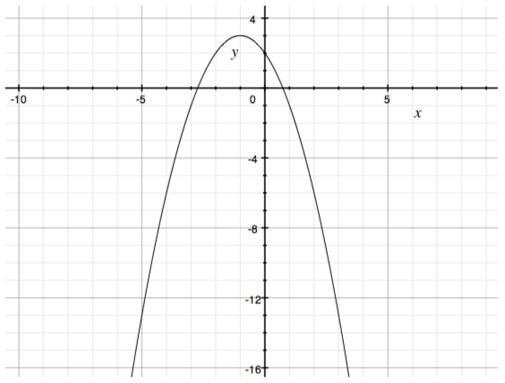
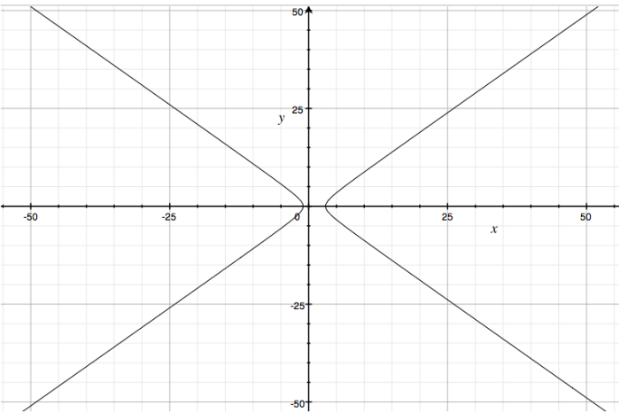

Take a fixed circle with centre \((a,b)\) and radius \(r\). What is its equation?
What are the equations of the following circles?
Centre \((a+1,b)\), radius \(r\).
Centre \((a-1,b)\), radius \(r\).
Centre \((a,b+1)\), radius \(r\).
Centre \((a,b-1)\), radius \(r\).
Centre \((-a,b)\), radius \(r\).
Centre \((b,a)\), radius \(r\).
Centre \((a-b,0)\), radius \(r\).
Centre \((2a,b)\), radius \(r\).
Centre \((a,b)\), radius \(2r\).
Centre \((a,b)\), radius \(\frac{1}{3}r\).
Centre \((a,b)\), radius \(r+1\).
Which of the following are equations of circles? For each that is, specify the centre and radius of the circle. For each that isn’t, can you say what shape the equation describes?
\((x - \pi)^2 + (y + 2)^2 = 3\)
\((x + 1)^2 + (y - 4)^2 = -1\)
\(x^2 + 2x + y = 2\)
\(x^2 + y^2 = 4\)
\((x - 1)^2 + y^2 = 4\)
\((x - 1)^2 - y^2 = 4\)
\(x^2 + y^2 - 3x - y = -1.5\)
\(x^2 + y^2 + 3x + y = -1.5\)
Find the equation of the circle of which the line segment from \((-5, 2)\) to \((3, -1)\) is a diameter.
How many other circles pass through both of these two points? Can you find the equations of any of them?
A circle of centre \((a,b)\) and radius \(r\) has equation: \[(x-a)^2 + (y-b)^2 = r^2.\]
Centre \((a+1,b)\), radius \(r\): \((x-a-1)^2 + (y-b)^2 = r^2\)
Centre \((a-1,b)\), radius \(r\): \((x-a+1)^2 + (y-b)^2 = r^2\)
Centre \((a,b+1)\), radius \(r\): \((x-a)^2 + (y-b-1)^2 = r^2\)
Centre \((a,b-1)\), radius \(r\): \((x-a)^2 + (y-b+1)^2 = r^2\)
Centre \((-a,b)\), radius \(r\): \((x+a)^2 + (y-b)^2 = r^2\)
Centre \((b,a)\), radius \(r\): \((x-b)^2 + (y-a)^2 = r^2\)
Centre \((a-b,0)\), radius \(r\): \((x-a+b)^2 + y^2 = r^2\)
Centre \((2a,b)\), radius \(r\): \((x-2a)^2 + (y-b)^2 = r^2\)
Centre \((a,b)\), radius \(2r\): \((x-a)^2 + (y-b)^2 = 4r^2\)
Centre \((a,b)\), radius \(\frac{1}{3}r\): \((x-a)^2 + (y-b)^2 = \frac{1}{9}r^2\)
Centre \((a,b)\), radius \(r+1\): \((x-a)^2 + (y-b)^2 = (r+1)^2\)
\((x-\pi)^2 + (y+2)^2 = 3\) is the equation of a circle with centre \((\pi,-2)\) and radius \(\sqrt{3}\).
There are no real values of \(x\) and \(y\) that satisfy the equation \((x+1)^2 + (y-4)^2 = -1\), so we can’t plot this in the \(x\)–\(y\) plane.
\(x^2 + 2x + y = 2\) can be rearranged to give \(y = -x^2-2x+2\), which is the standard form of a quadratic equation, and so describes a parabola:
Figure 1
\(x^2 + y^2 = 4\) is the equation of a circle centred at the origin with radius \(2\).
\((x-1)^2 + y^2 = 4\) is the equation of a circle with centre \((1,0)\) and radius \(2\).
\((x-1)^2 - y^2 = 4\) is the equation of a hyperbola:
Figure 2
\(x^2 + y^2 - 3x - y = -1.5\) can be rearranged to give \(\left(x-\frac{3}{2}\right)^2 + \left(y-\frac{1}{2}\right)^2 = 1\), so this is the equation of a circle with centre \((\frac{3}{2},\frac{1}{2})\) and radius \(1\).
This equation looks rather similar to the previous one. Maybe we can use that to save ourselves some effort.
\(x^2 + y^2 + 3x + y = -1.5\) can be rearranged to give \(\left(x+\frac{3}{2}\right)^2 + \left(y+\frac{1}{2}\right)^2 = 1\), so this is the equation of a circle with centre \((-\frac{3}{2},-\frac{1}{2})\) and radius \(1\).
The centre of the circle must be the midpoint of the line segment from \((-5,2)\) to \((3,-1)\), so the centre of the circle is at \(\left(-1,\frac{1}{2}\right)\). The radius is then the distance from the centre to either of the points \((-5,2)\) or \((3,-1)\), say \((3,-1)\): \[r = \sqrt{(-1-3)^2 + \left(\frac{1}{2}-(-1)\right)^2} = \sqrt{16+\frac{9}{4}} = \frac{\sqrt{73}}{2}.\]
This is equivalent to working out the diameter, \(d\), of the circle as the distance between the points \((5,2)\) and \((3,-1)\), and then saying \(r = \frac{1}{2}d\).
So the equation of the circle of which the line segment from \((-5,2)\) to \((3,-1)\) is a diameter is \[(x+1)^2 + \left(y-\frac{1}{2}\right)^2 = \frac{73}{4}.\]
There are infinitely many circles that pass through both of the points \((-5,2)\) and \((3,-1)\). Some examples are shown in figure 3.